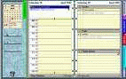

 PSP Day Organizer Credits
PSP Day Organizer was made by Ocean19 with supervision and help from TombstoneTim. It was released on August 23rd, 2006. Using and modifying code from MoonCricket11 and Fuzzie 360 of the pspWxp forums. http://blazebyte.myfreeforum.org/index.php
Thanks for the all the help and advice Tim!
Portals other than pspWxp and WinPSPortal Plus must ask first before including this into their portal.
Hope you like it! -Ocean19-